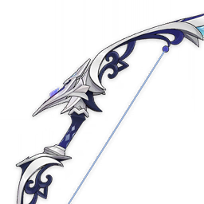

Weapons
Song of Stillness
Song of Stillness
A strange longbow that resembles a sea creature. Its string makes no sound at all.

Stats:
| Asc. | Lv. | Base ATK | ATK% |
|---|---|---|---|
| A0 | 1 | 42 | 9.0% |
| A6 | 90 | 510 | 41.3% |
| Click to expand... | |||
Refinements:
| Refinement | Desc |
|---|---|
| Benthic Pulse R1 | After the wielder is healed, they will deal 16% more DMG for 8s. This can be triggered even when the character is not on the field. |
| Benthic Pulse R2 | After the wielder is healed, they will deal 32% more DMG for 8s. This can be triggered even when the character is not on the field. |
| Click to expand... | |
Ascensions:
| Asc. | Mora | Items | ||
|---|---|---|---|---|
| A6 | 45000 | |||
| Click to expand... | ||||
Lore:
Legend has it that a hero who fell into the abyss left this strange bow behind, the body of which shines brightly like pearls and secret silver.
The tint of the string is like the blackest seas or the lightless void, and it is as silent as empty vacuum.
In the grand days of old, golems formed an army and fought against the dragons in the depths of the sea.
The dragons, born of the sea, were a brutal race ruled by a King named Scylla,
At that time, the Dragon King Scylla recruited a horde of barbarians and vishaps, driving them toward the threshold of the ancient nation,
And the bow-wielding army moved forward to intercept and resist them, until the great Harmost sealed away Scylla's power...
Afterwards, the once-glorious kingdom became nothing more than a bed of ruins scattered across the seafloor,
But the remnants of the golem army continued fighting the descendants of the dragons in places the sunlight couldn't reach...
The still deeps had never been perturbed by bloody battle, but its petrified heart gradually began to collapse.
The last archer and the lone descendant of the dragon eventually reached a peace agreement.
The endless clash of tooth and nail had grown vexing,
And so sword and bow would no longer draw any gaze in the lightless abyss.
The knights of the lost nation and the vishap warriors could not help but burst out laughing,
Discarding their burdensome weapons, as if finally freed from a meaningless blood-feud...
As for what later happened in the stillness beneath the ocean depths, it was interpreted and re-interpreted by countless operas, far into the future.
Some say that both betrayed each of their homelands, and built new settlements for exiles...
Like this ancient, magnificent bow, many stories eventually sink into the still, silent deeps, becoming naught but fanciful legends.
"Savagery" at last had mastery over the former lands of the kingdom, and many stories and songs are now little more than harmless, fictional dramas...